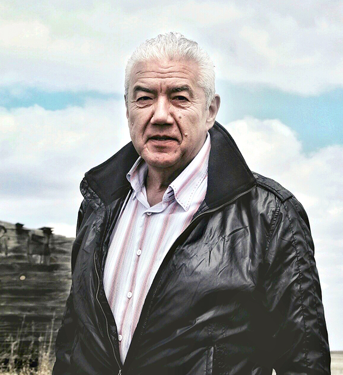
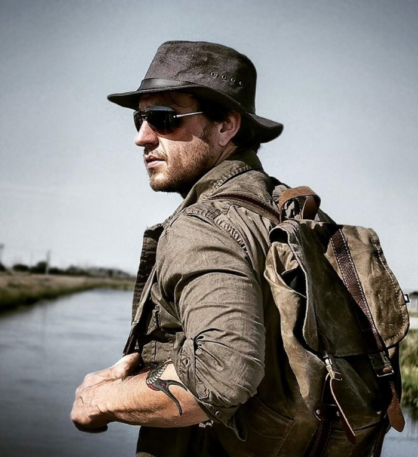

Canadian Actor, Musician and Activist
Tom Jackson sets out on a tour across
the Canadian Badlands in search of
meaningful, culturally rich stories.
SCROLL TO EXPLORE
Canadian Actor, Musician and Activist
Tom Jackson sets out on a tour across
the Canadian Badlands in search of
meaningful, culturally rich stories.
SCROLL TO EXPLORE
We’re on a journey to find meaningful stories and capture images that make
you feel the true power of the Badlands. There is great spirit of the land
and the people who live and lived here… Dinosaur Provincial Park is a
snowflake
all on its own… I walked the hallowed ground under the dry sun.
In its silence it sounded like fresh snow beneath my feet. I took my shoes and socks off and stood there for a moment of eternity … I will never be the same.
Explore the tales from my diary below . . .
In Summer 2016 Tom Jackson set out on a quest with Canadian Badlands Tourism to gather stories and experiences from across Southern Alberta with a series of concerts and story sharing events. Tom toured with explorer and photojournalist Dax Justin, documenting their Badlands tales and adventures across social media and on Dax's Tour Blog →
TOM JACKSON
ACTOR, MUSICIAN, ACTIVIST



DAX JUSTIN
EXPLORER, PHOTOGRAPHER, WRITER


